The same Grandma screens (1280x800 kiosk) and family phone screens in three visual directions. Open the pages for every state (?state=offline|night on Home, ?state=presets|sent|video on the photo, ?tab=grandma|mine on the family app). Sample photos are Unsplash placeholders; no real family data.
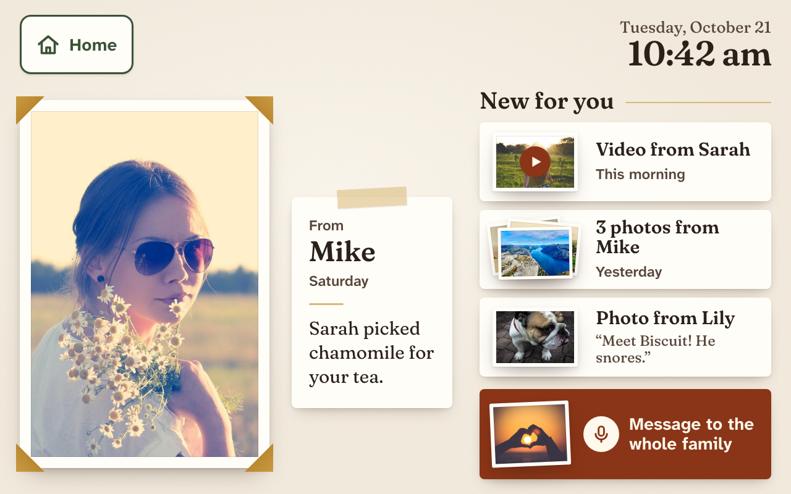
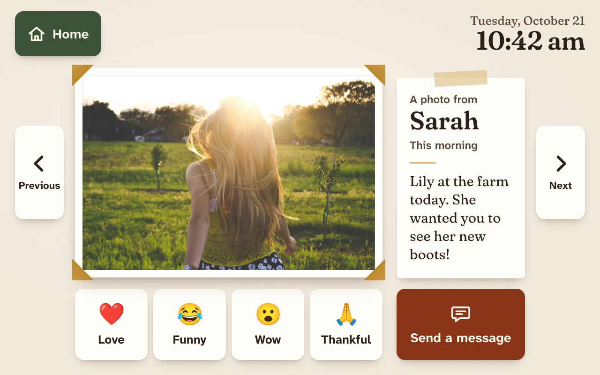
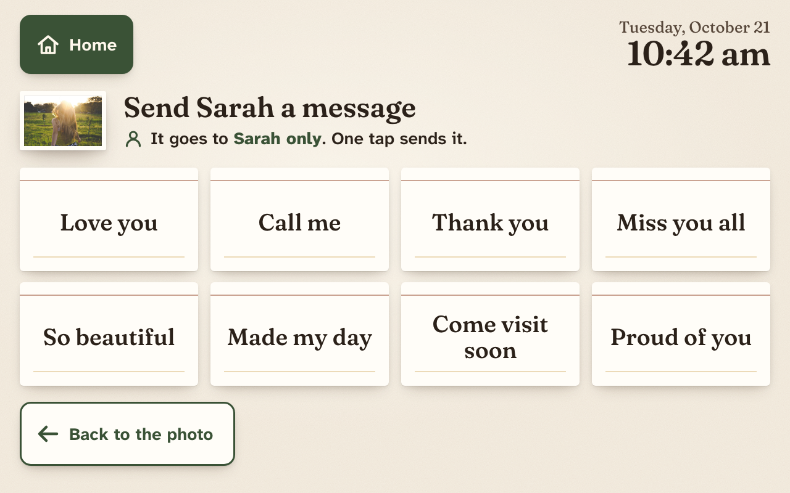
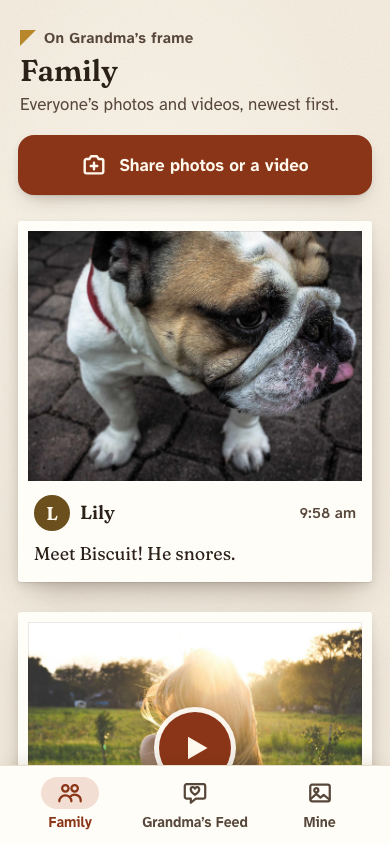
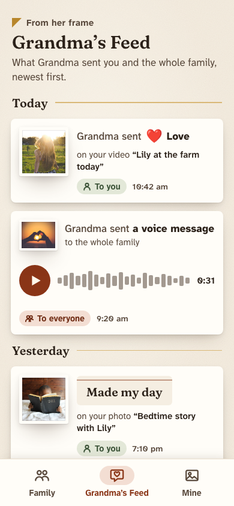
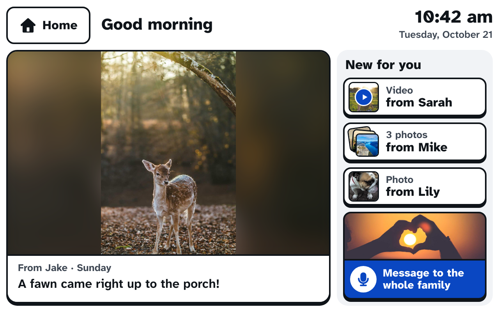
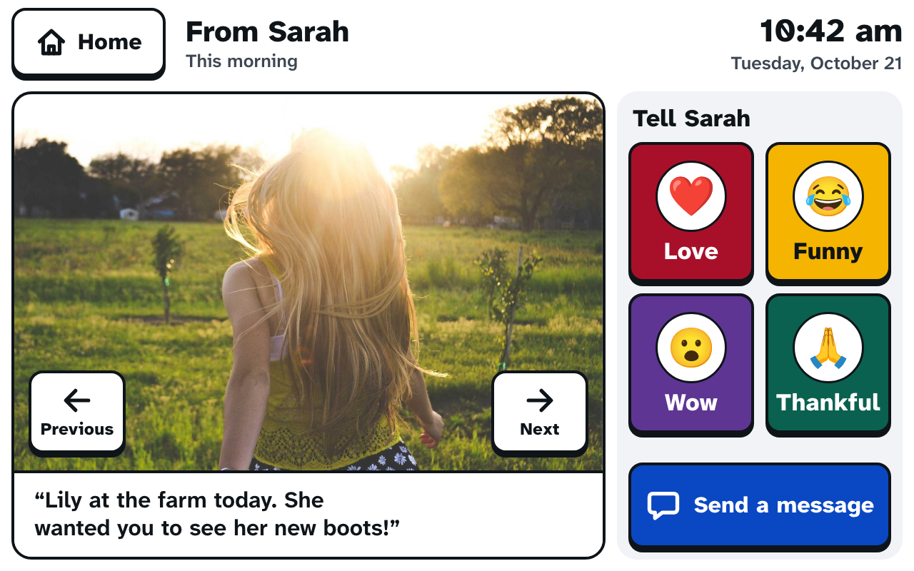
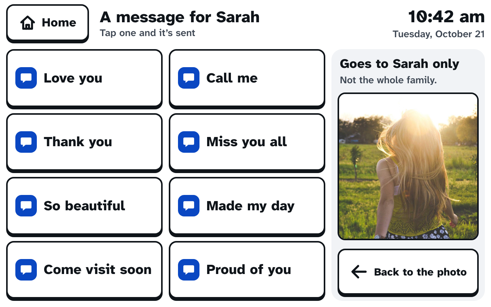
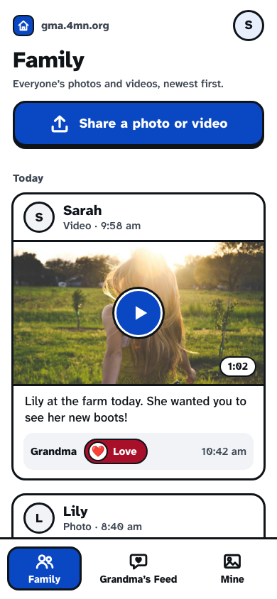
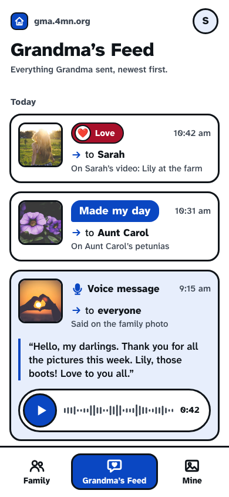
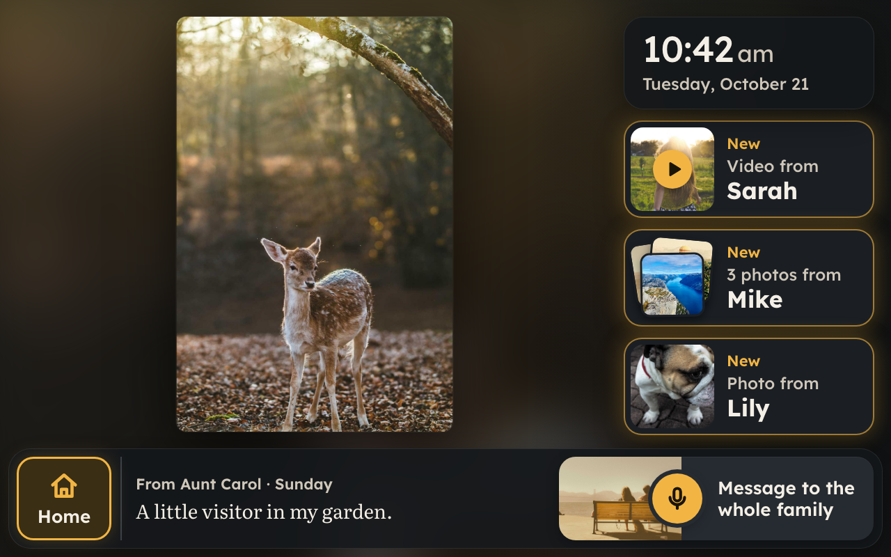
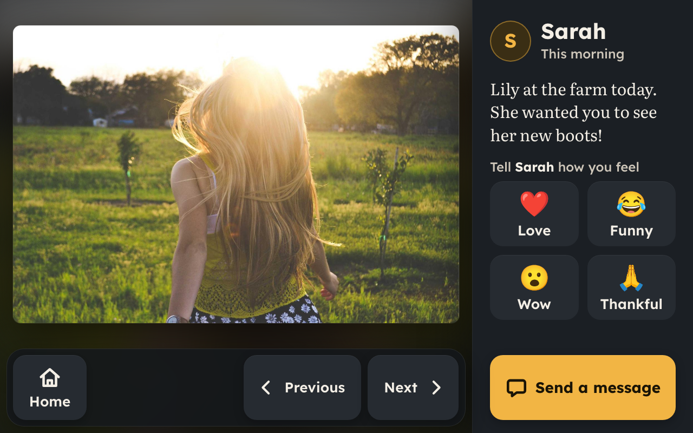
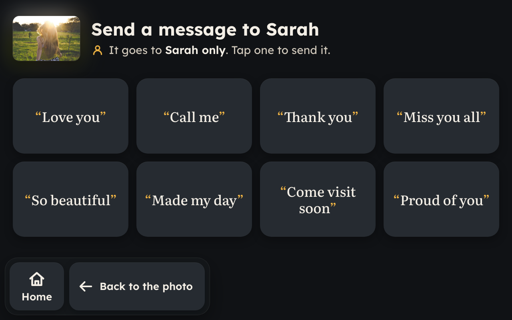
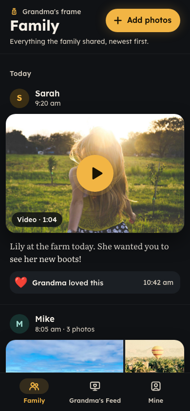
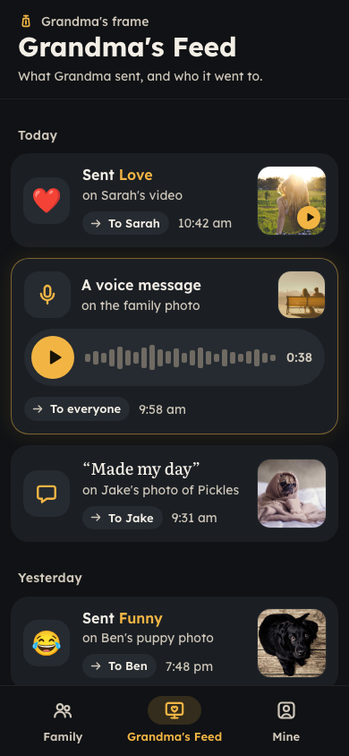